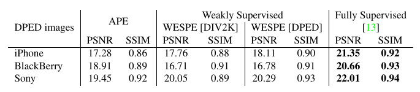
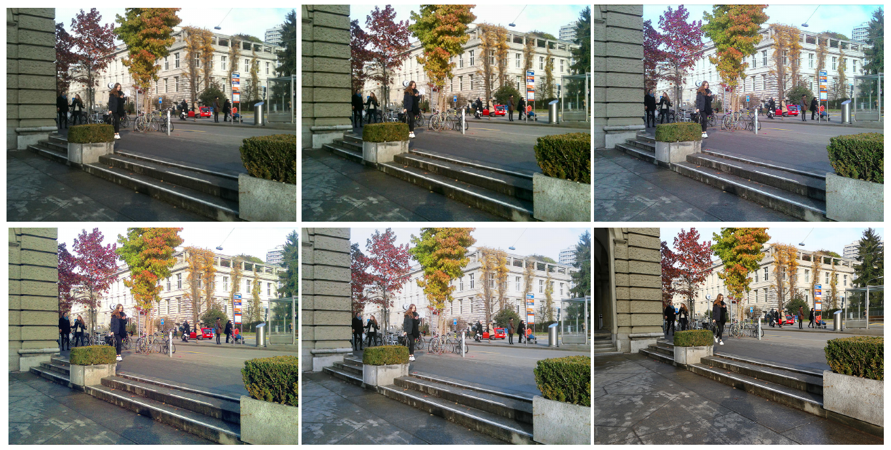
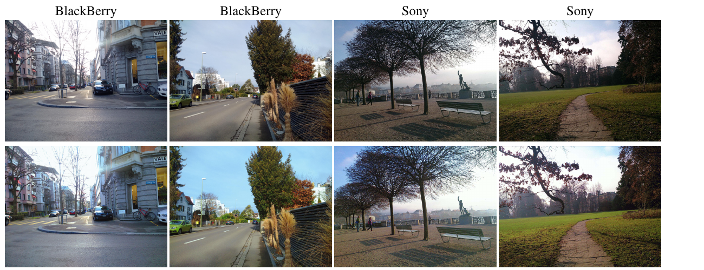
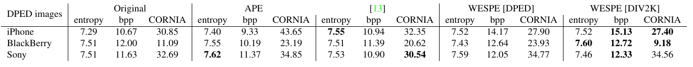
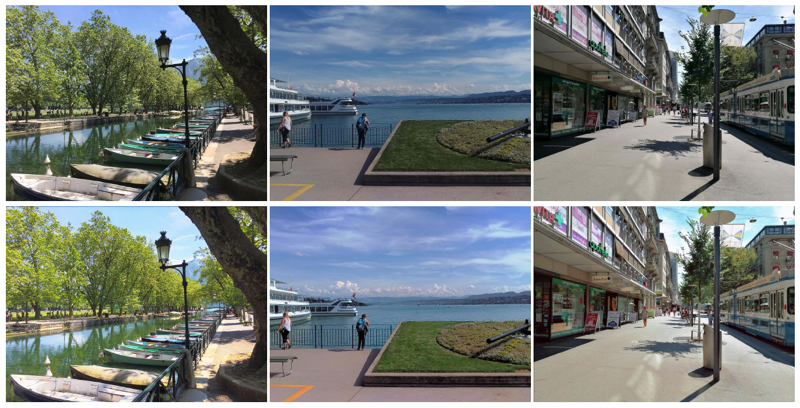
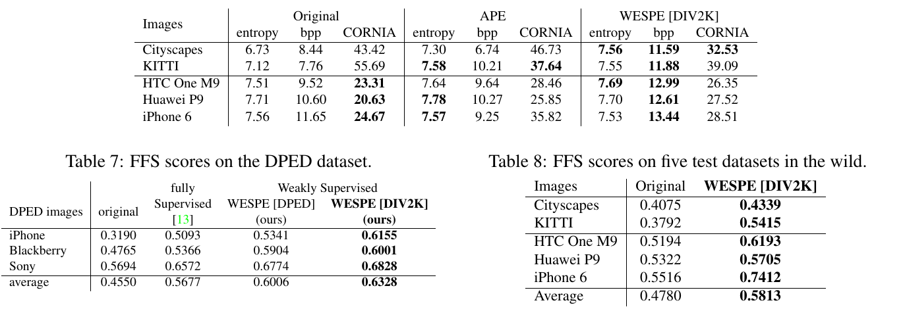

WESPE: Weakly Supervised Photo Enhancer for Digital Cameras
代码说明：论文声称公开代码（项目页
people.ee.ethz.ch/~ihnatova/wespe.html，现已 302 跳转到作者主页），但作者 GitHub（aiff22）下只有 DPED / PyNET 等仓库，没有 WESPE 官方实现。本文引用的是 GitHub 上最常被引用的非官方 TensorFlow 复现 JuheonYi/WESPE-TensorFlow（commita5ae3cf，2018-10）。该仓库 README 自己标注「Ongoing」，弱监督（DIV2K 目标）训练未完成。下文所有repo/…引用都指向这个非官方仓库，它和论文的偏差在 §4 单独列出。

问题
DPED 的全监督做法要给每台手机配一台单反、三脚架同拍再做像素对齐，每换一台相机就得重来一遍。
做法
只要两个互不相关的照片集合：源相机的照片 X，和任意高质量照片 Y。内容由循环重建 $F(G(x))\approx x$ 保住，「画质」交给两个判别器去评。
关键设计
判别器按信息类型拆开：$D_c$ 看模糊后的图（只剩亮度、对比度、主色），$D_t$ 看灰度图（只剩纹理）。颜色和纹理分别受监督。
结果
DPED 上 SSIM 接近全监督（0.90/0.91/0.93 vs 0.92/0.93/0.94），PSNR 低 2–4 dB；用 DIV2K 作目标时，无参考指标和 FFS 虚拟评分都超过全监督的 DPED。
1. 出发点 (Motivation)
同一团队在 ICCV 2017 的 DPED 把「手机照 → 单反照」做成了监督学习：iPhone 3GS / BlackBerry Passport / Sony Xperia Z 和 Canon 70D 同时拍同一场景，再用 SIFT 配准切出对齐的 100×100 补丁，用「模糊后的颜色 L2 + 灰度对抗纹理 + VGG 内容 + TV」四项损失训练。这个方案能用，代价是数据：每台新相机都要重拍几千对、重新配准，而且配准误差会直接变成监督噪声。
WESPE 想问的是：如果只有「源相机拍的一堆照片」和「目标风格的一堆照片」，内容毫无对应，还能学出这个映射吗？ 论文说能，作者举的证据是：
- 不需要配对，「收集数据和训练几个小时内就能完成，对任何相机都可重复」（Abstract）；
- 目标集合可以是任意高质量照片（论文用 DIV2K 的 900 张），不必是某台单反；
- 在 KITTI / Cityscapes 这种本来没有「高质量版本」的数据上也能训。
为了在没有配对 GT 的地方评估，论文另外做了一个 Flickr Faves Score (FFS) 虚拟评分器：爬 16K 张 Flickr 照片，按「收藏数 / 浏览数」的中位数切成好 / 坏两类，训练一个 VGG-19 二分类器（测试准确率 68.75%）。
DPED
同组前作提出的数据集与方法：三台手机 + Canon 70D 同拍，像素对齐，用于全监督增强。本文里也指那个全监督基线 [13]。
弱监督 (weak supervision)
论文的说法，实质是无配对 (unpaired)：只知道哪些图属于「好」的域，不知道每张输入对应哪张好图。
循环一致 (cycle consistency)
CycleGAN 的思路：正向 G 之后接一个逆向 F，要求 F(G(x)) 还原 x，借此约束 G 别把内容改掉。
DIV2K
NTIRE 2017 超分挑战用的 2K 高质量图像集，来源相机很多，内容多样。本文用其中 900 张当「好照片」域。
APE
Apple Photos Enhancer 2.0，苹果相册的「一键增强」，本文的传统商业基线。
CORNIA
一种无参考图像质量指标，用码本特征回归人的主观分，越低越好。
entropy / bpp
像素直方图熵、PNG 无损压缩后每像素比特数。两者都衡量「信息量」，噪声也会让它们升高。
FFS
Flickr Faves Score：本文训练的「虚拟评委」，输出一张图被判为「会被收藏」的概率。
2. 方法 (Method)
2.1 整体：G 负责变好看，F 负责把内容还回来
设源域 \(X\)（某台手机的照片）、目标域 \(Y\)（高质量照片），训练样本 \(x\in X\)、\(y\in Y\) 不成对。模型有四个网络：
- \(G: X\to Y\)，增强器，部署时只用它；
- \(F: Y\to X\)，逆映射，只在训练时用；
- \(D_c\)：颜色判别器；\(D_t\)：纹理判别器。
总损失（论文 Eq. 6）：
—— 翻译: 主体是「内容别丢」，两个对抗项乘了一个很小的 0.005，TV 项再加一点平滑。直观地说，G 的大方向是先保证能被还原回去，再在这个范围里往高质量照片的颜色和纹理分布靠。
非官方实现里 G 和 F 用的是同一个网络结构，各自一套参数（variable scope 不同）：
repo/WESPE.py:L62-L69 — 正向 G 与逆向 F 的串联构图（非官方实现）
def build_generator(self):
self.enhanced_patch = modules.generator_network(self.phone_patch, var_scope = 'generator')
self.reconstructed_patch = modules.generator_network(self.enhanced_patch, var_scope = 'generator_inverse')
self.enhanced_test = modules.generator_network(self.phone_test, var_scope = 'generator')
self.reconstructed_test = modules.generator_network(self.enhanced_test, var_scope = 'generator_inverse')
self.enhanced_test_unknown = modules.generator_network(self.phone_test_unknown, var_scope = 'generator')
self.reconstructed_test_unknown = modules.generator_network(self.enhanced_test_unknown, var_scope = 'generator_inverse')
reconstructed_patch = F(G(x)) 就是 Fig. 1 里的 \(\tilde x\)。生成器本体是 9×9 卷积 + 4 个残差块 + 3 个 3×3 卷积 + 1×1 输出（repo/modules.py:L23-L43），全程不下采样、不上采样。所以 WESPE 只能在原分辨率上调色调、调局部对比、去噪或锐化，没法真的增加分辨率。
2.2 内容一致性损失：在输入域里比较
—— 翻译: $\psi_j$ 是 VGG-19 第 $j$ 层的特征图，$C_j H_j W_j$ 是它的元素个数，用来归一化。这一项比较的是「原手机图」和「增强后再变回手机风格的图」在 VGG 特征上的距离。增强图本身不和任何 GT 比较，所以不需要配对。
类比：把一篇中文翻成英文（G），再请另一个人把英文翻回中文（F）。如果回译和原文意思一致，就说明翻译没丢内容，整个检查过程不需要一份「标准英文译文」。DPED 的内容损失是 \(\|\psi(G(x))-\psi(y_{\text{paired}})\|\)，必须有配对的 \(y\)；WESPE 把比较对象换成 \(x\) 本身，配对需求就没了。论文说像素级损失「太严格」，所以用 VGG 特征；具体用哪一层 \(j\) 论文没写（DPED 用的是 relu5_4）。
这里有一个代价，§5 会展开：回译检查奖励的是可逆性，而去噪这类操作本来就不可逆。
2.3 对抗颜色损失：先模糊，再判别
—— 翻译: 用一个高斯核把图像抹平，$A=0.053$，$\mu=0$，$\sigma=3$。模糊之后，纹理和边缘基本没了，剩下的是大块的亮度、对比度和主色调。颜色判别器只看这个版本，所以只能根据颜色来判断真假。
一个小的数值核对：按论文字面写的分母 \(2\sigma\)（不是 \(2\sigma^2\)），\(\sum_{k,l}\exp(-(k^2+l^2)/6)\approx \pi\cdot 6\approx 18.85\)，归一化常数正好是 \(1/18.85\approx 0.053\)。也就是说 \(A=0.053\) 对应的是方差为 3（标准差约 1.73 像素）的高斯，并不是公式里写的「\(\sigma=3\)」。两种读法在模糊强度上差将近一倍，论文没有说明。
—— 翻译: 标准的非饱和 GAN 生成器损失。G 希望 $D_c$ 把模糊后的增强图判成「高质量」，概率越接近 1，$-\log$ 越接近 0。实际效果是把增强图的整体颜色分布往目标集合拉。
和 DPED 对比：DPED 的颜色损失是 \(\|y_b - G(x)_b\|^2\)，需要配对 \(y\)；WESPE 把它换成对模糊图的对抗判别，不再需要配对。
2.4 对抗纹理损失：只看灰度
—— 翻译: $G(x)_g$ 是增强图转成的灰度图。纹理判别器看不到颜色，只能根据边缘、颗粒、细节来区分「原生高质量」和「增强出来的」。G 要骗过它，就得做出和目标集合统计上相似的纹理。
两个判别器结构相同，区别只在送进去之前的预处理。非官方实现用 preprocess 参数切换：
repo/modules.py:L45-L66 — 判别器：按预处理方式区分颜色 / 纹理判别器，第一层 11×11 步长 4（非官方实现）
def discriminator_network(image, var_scope = 'discriminator', preprocess = 'gray'):
with tf.variable_scope(var_scope, reuse = tf.AUTO_REUSE):
if preprocess == 'gray':
#convert to grayscale image
print("Discriminator-texture")
image_processed = tf.image.rgb_to_grayscale(image)
elif preprocess == 'blur':
print("Discriminator-color (blur)")
image_processed = gaussian_blur(image)
else:
print("Discriminator-color (none)")
image_processed = image
# conv layer 1
temp = tf.layers.conv2d(image_processed, 48, 11, strides = 4, padding = 'SAME', name = 'CONV_1', kernel_initializer = tf.contrib.layers.xavier_initializer(), reuse=tf.AUTO_REUSE)
temp = lrelu(temp)
# conv layer 2
temp = tf.layers.conv2d(temp, 128, 5, strides = 2, padding = 'SAME', name = 'CONV_2', kernel_initializer = tf.contrib.layers.xavier_initializer(), reuse=tf.AUTO_REUSE)
temp = tf.layers.batch_normalization(temp, name = 'BN_2')
temp = lrelu(temp)
需要注意第一层：11×11、步长 4。一个 100×100 的补丁，进来第一步就降到 25×25。这个判别器继承自 AlexNet 风格，适合判断「整体像不像」，但对单像素级别的颗粒、噪声形态这类最细的纹理分辨力有限。最后还接全连接层，输出整张补丁的一个标量，不是 PatchGAN 那种逐区域判断。
2.5 TV 损失
—— 翻译: 相邻像素差的总和。值越小图越平滑，用来压住 GAN 常见的高频噪点和棋盘格。它和纹理判别器的方向相反：一个让图平滑，一个让图出细节，两者的权重比例决定最后的锐度。
2.6 四项损失在代码里的拼装
repo/WESPE.py:L76-L95 — 生成器总损失：循环内容 + 颜色对抗 + 纹理对抗 + TV（非官方实现）
def build_generator_loss(self):
# content loss (vgg feature distance between original & reconstructed)
original_vgg = net(self.vgg_dir, self.phone_patch * 255)
reconstructed_vgg = net(self.vgg_dir, self.reconstructed_patch * 255)
#original_vgg = net(self.vgg_dir, self.dslr_patch * 255)
#reconstructed_vgg = net(self.vgg_dir, self.enhanced_patch * 255)
self.content_loss = tf.reduce_mean(tf.square(original_vgg[self.content_layer] - reconstructed_vgg[self.content_layer]))
# color loss (gan, enhanced-dslr)
self.color_loss = tf.reduce_mean(sigmoid_cross_entropy_with_logits(self.logits_dslr_color, self.logits_enhanced_color))
# texture loss (gan, enhanced-dslr)
self.texture_loss = tf.reduce_mean(sigmoid_cross_entropy_with_logits(self.logits_dslr_texture, self.logits_enhanced_texture))
# tv loss (total variation of enhanced)
self.tv_loss = tf.reduce_mean(tf.image.total_variation(self.enhanced_patch))
# calculate generator loss as a weighted sum of the above 4 losses
self.G_loss = self.color_loss * self.w_color + self.texture_loss * self.w_texture + self.content_loss * self.w_content + self.tv_loss * self.w_tv
self.G_optimizer = tf.train.AdamOptimizer(self.config.learning_rate).minimize(self.G_loss, var_list=self.g_var)
和论文逐项对照：
- 内容项（L78-L82）：
phone_patch对reconstructed_patch，和 Eq. 1 的 \(x\) vs \(F(G(x))\) 一致。被注释掉的 L80-L81 是 DPED 式的「增强图 vs DSLR 图」，留在那里正好说明两种监督方式的差别。 - 颜色 / 纹理项（L85、L88）：和 Eq. 3/4 对不上，详见 §4.1。
- TV 项（L91）：
tf.image.total_variation返回每张图的 L1 差分总和，没有除以 \(CHW\)，所以数值很大，代码里配了w_tv = 1/400来抵消。
2.7 无配对采样：真正把「弱监督」落到数据上的地方
repo/dataloader/dataloader_DIV2K.py:L32-L42 — 手机补丁和 DIV2K 补丁各自独立随机抽取（非官方实现）
for i in range(config.batch_size):
index = np.random.randint(len(dataset_phone))
phone_patch = dataset_phone[index]
index = np.random.randint(len(dataset_DIV2K))
DIV2K_img = dataset_DIV2K[index]
#print("img shape:", DIV2K_img.shape)
patch_size = config.patch_size
H = np.random.randint(DIV2K_img.shape[0]-patch_size)
W = np.random.randint(DIV2K_img.shape[1]-patch_size)
DIV2K_patch = DIV2K_img[H: H+patch_size, W: W+patch_size, :]
两个 np.random.randint 各抽各的：手机补丁和 DIV2K 补丁之间没有任何对应关系，这就是论文 §4.1 说的「每次迭代随机一个正样本和一个负样本」。但同一仓库给 DPED 目标用的 dataloader/dataloader.py:L32-L34 用同一个 index 取手机图和 DSLR 图，于是 WESPE[DPED] 在这个复现里每个 batch 的正负样本内容是对齐的。损失里虽然不直接比较两者，但判别器看到的是同内容的对照，比论文设定多了一层隐性配对信号。
3. 结论 (Key findings)
3.1 全参考：DPED 上接近全监督的 SSIM，PSNR 明显落后

- WESPE[DPED] 在 iPhone 和 Sony 上 PSNR 高于 APE（18.11 vs 17.28、20.29 vs 19.45），BlackBerry 上低于 APE（16.78 vs 18.91）。论文正文说它「performs better than APE」，这个说法只在 SSIM 上全部成立。
- WESPE[DIV2K] 在全参考指标上又比 WESPE[DPED] 低一点（例如 iPhone 17.76 / 0.88）。论文的解释是：目标域换成 DIV2K 后，结果离 Canon 70D 的 GT 远了，但「离 GT 近不等于好看」。

3.2 无参考：DIV2K 目标在 DPED 上整体最好


3.3 野外数据：差的相机提升大，好的相机提升有限甚至变差


用户研究（论文 Table 5，38 人，每人做 35×2 次二选一，数值是选 WESPE 的比例）：
| 对比 | Cityscapes | KITTI | HTC M9 | Huawei P9 | iPhone 6 |
|---|---|---|---|---|---|
| WESPE vs 原图 | 0.94±0.03 | 0.81±0.10 | 0.73±0.08 | 0.63±0.11 | 0.70±0.10 |
| WESPE vs APE | 0.96±0.03 | 0.65±0.16 | 0.53±0.09 | 0.44±0.12 | 0.62±0.15 |
可以读出几点：
- 源相机越差，收益越大。Cityscapes 行车记录仪画面上 94% 的人选 WESPE；Huawei P9 上和 APE 相比只有 44%，实际输给了苹果的一键增强。
- 全参考和无参考的结论相反。PSNR 上 WESPE 比全监督低 2–4 dB，FFS 和 CORNIA（DPED 上）却更好。论文把这解释为「proximity to ground truth is not the only matter」；另一种同样成立的解释是：无参考指标奖励的是饱和度和对比度，不一定是忠实度（§5 展开）。
- DIV2K 目标优于 DPED DSLR 目标，这一点在 Table 3、7 上反复出现。论文认为原因是 DIV2K 来源更多样、噪声更少。
4. 实现细节 (Implementation notes)
前提再说一次：没有官方代码，下面是非官方实现 JuheonYi/WESPE-TensorFlow 和论文的对照。这个仓库的 README（repo/README.md:L25-L36）主动列出了几处修改，下面把这些和我交叉阅读时额外发现的问题合在一起。
4.1 生成器对抗损失疑似写错（README 未提及）
repo/WESPE.py:L85 和 L88（见 §2.6 的代码块）把 logits_dslr_* 作为第一个参数、logits_enhanced_* 作为第二个参数传进去。再看包装函数：
repo/ops.py:L17-L21 — sigmoid 交叉熵的包装，第一个参数是 logits，第二个是 labels（非官方实现）
def sigmoid_cross_entropy_with_logits(x, y):
try:
return tf.nn.sigmoid_cross_entropy_with_logits(logits=x, labels=y)
except:
return tf.nn.sigmoid_cross_entropy_with_logits(logits=x, targets=y)
所以 G 的损失实际是「以真图的 logit 为 logits、以增强图的 logit 为 labels」的交叉熵。TF 的公式是 \(\max(a,0) - a\,z + \log(1+e^{-|a|})\)（\(a\)=logits，\(z\)=labels），对 G 有梯度的只有 \(-a\,z\) 这一项。也就是说 G 在最小化 \(-D(y)\cdot D(G(x))\)：只要判别器给真图的 logit 是正的，G 就把增强图的 logit 往正无穷推，而且是线性、无界的。论文 Eq. 3/4 的标准写法是 \(-\log D(G(x))\)，对应 TF 里的 (logits_enhanced, ones_like(...))。判别器那边（repo/WESPE.py:L112-L113）倒是写对了。README 里记录的「训练会 mode collapse，增强图像负片一样，PSNR 低于 10 dB 就重开」（repo/README.md:L34），很可能和这一处有关。我没有跑实验验证，这里只是从公式上推出的可疑点。
4.2 颜色判别器不做模糊
repo/WESPE.py:L97-L104 — 判别器构建：颜色判别器的 blur 版本被注释掉，改为 'none'（非官方实现）
def build_discriminator(self):
#self.logits_dslr_color, _ = modules.discriminator_network(self.dslr_patch, var_scope = 'discriminator_color', preprocess = 'blur')
self.logits_dslr_color, _ = modules.discriminator_network(self.dslr_patch, var_scope = 'discriminator_color', preprocess = 'none')
self.logits_dslr_texture, _ = modules.discriminator_network(self.dslr_patch, var_scope = 'discriminator_texture', preprocess = 'gray')
#self.logits_enhanced_color, _ = modules.discriminator_network(self.enhanced_patch, var_scope = 'discriminator_color', preprocess = 'blur')
self.logits_enhanced_color, _ = modules.discriminator_network(self.enhanced_patch, var_scope = 'discriminator_color', preprocess = 'none')
self.logits_enhanced_texture, _ = modules.discriminator_network(self.enhanced_patch, var_scope = 'discriminator_texture', preprocess = 'gray')
README 写了「Removed blurring for computing color loss」，但这一改正好去掉了论文最核心的设计：\(D_c\) 不再只看颜色，而是看完整 RGB，实际成了「彩色全信息判别器 + 灰度纹理判别器」。如果要复现论文的颜色 / 纹理解耦，必须改回 'blur'。
4.3 高斯核：sqrt 让有效 σ 变大
repo/ops.py:L23-L36 — 21×21 高斯核的构造与深度可分卷积模糊（非官方实现，当前未被调用）
def gauss_kernel(kernlen=21, nsig=3, channels=1):
interval = (2*nsig+1.)/(kernlen)
x = np.linspace(-nsig-interval/2., nsig+interval/2., kernlen+1)
kern1d = np.diff(st.norm.cdf(x))
kernel_raw = np.sqrt(np.outer(kern1d, kern1d))
kernel = kernel_raw/kernel_raw.sum()
out_filter = np.array(kernel, dtype = np.float32)
out_filter = out_filter.reshape((kernlen, kernlen, 1, 1))
out_filter = np.repeat(out_filter, channels, axis = 2)
return out_filter
def gaussian_blur(x):
kernel_var = gauss_kernel(21, 3, 3)
return tf.nn.depthwise_conv2d(x, kernel_var, [1, 1, 1, 1], padding='SAME')
kern1d 每个 tap 约 1/3 个标准差，即 σ≈3 像素。随后 np.sqrt(np.outer(...)) 对二维高斯开根号，结果还是高斯，但 σ 变成 \(3\sqrt2\approx 4.2\) 像素。这段写法来自 DPED 官方代码的常见移植，论文的 \(\sigma=3\) 到底指哪种，从这段代码看不出来。再算上 §2.3 里「\(A=0.053\) 实际对应方差 3」的问题，颜色判别器的模糊强度在论文、公式和代码三处都不一致。
4.4 训练循环：G、D_c、D_t 各更新一次
repo/WESPE.py:L158-L162 — 每次迭代 G → D_c → D_t 顺序各走一步（非官方实现）
for i in range(0, self.config.train_iter):
phone_batch, dslr_batch = get_batch(self.dataset_phone, self.dataset_dslr, self.config)
_, enhanced_batch = self.sess.run([self.G_optimizer, self.enhanced_patch] , feed_dict={self.phone_patch:phone_batch, self.dslr_patch:dslr_batch})
_ = self.sess.run(self.D_optimizer_color , feed_dict={self.phone_patch:phone_batch, self.dslr_patch:dslr_batch})
_ = self.sess.run(self.D_optimizer_texture , feed_dict={self.phone_patch:phone_batch, self.dslr_patch:dslr_batch})
1:1:1 交替，三个优化器都是 Adam、lr 1e-4（repo/WESPE[DPED]-main.ipynb:L38）。G 的 var_list 是名字里含 generator 的变量，所以 G 和 F 联合更新（repo/WESPE.py:L72），F 没有单独的对抗损失。这一点和 CycleGAN 不同：CycleGAN 是双向 GAN，F 也有自己的判别器；WESPE 只有单向 GAN，F 唯一的监督就是「把 \(G(x)\) 还原成 \(x\)」。
4.5 其它论文 vs 代码差异（汇总）
| 项目 | 论文 | 非官方实现 | 出处 |
|---|---|---|---|
| 损失权重 (content, color, texture, tv) | 1, 5e-3, 5e-3, 10 | DPED 目标 0.1, 20, 3, 1/400；DIV2K 目标 0.2, 40, 3, 1/400 | repo/WESPE[DPED]-main.ipynb:L44-L47、repo/WESPE[DIV2K]-main.ipynb:L44-L47 |
| 内容层 \(\psi_j\) | 未说明 | relu2_2（作者注：「originally relu5_4 in DPED」） |
repo/WESPE[DPED]-main.ipynb:L37 |
| 生成器 BN | 残差块内有 Batch NN（Fig. 2） | 删除 BN | repo/modules.py:L14、L19 被注释 |
| 生成器输出 | 9×9 卷积（DPED 原版接 tanh） | 1×1 卷积，无激活 | repo/modules.py:L42 |
| batch size | 30 | 32 | repo/WESPE[DPED]-main.ipynb:L33 |
| 迭代数 / 补丁 | 20K / 100×100 | 20K / 100×100（一致） | repo/WESPE[DPED]-main.ipynb:L34、L41 |
| 判别器步长 | 第 1、2、5 层 4/2/2 | 一致 | repo/modules.py:L59、L63、L78 |
| 正负样本采样 | 随机、不配对 | DIV2K 不配对；DPED 同 index 配对 | repo/dataloader/dataloader.py:L32-L34 |
| 内容损失范数 | \(\ell_2\) 范数 / \(CHW\) | 平方误差均值（MSE） | repo/WESPE.py:L82 |
| TV 归一化 | 除以 \(CHW\) | 不归一化，靠 1/400 权重补偿 | repo/WESPE.py:L91 |
4.6 复现日志里的一个旁证
WESPE[DPED]-main.ipynb 的训练输出里，200 个测试补丁上 phone-reconstructed PSNR 约 39 dB，phone-enhanced PSNR 约 29 dB，dslr-enhanced PSNR 约 17.5–17.8 dB（论文 iPhone 是 18.11，量级一致）。这说明两件事：一是 \(F(G(x))\) 几乎能完美还原 \(x\)，循环约束很容易被满足；二是 \(G(x)\) 和输入只差约 29 dB，G 对图像的改动其实很保守，主要是全局调色。这和 Fig. 2 的观感一致。
5. 批判性总结 (Critical assessment)
Strengths
- 问题设定的价值很明确。把「换一台相机就要重新做对齐数据」的成本降到「收一堆照片」，这对后来整条 phone-to-DSLR 路线都有影响。
- 判别器按信息通道拆分（模糊 → 颜色，灰度 → 纹理），这个思路简单，可解释性好，而且能单独替换其中一路。
- 评估做得比同期工作完整：全参考、无参考、用户研究、虚拟评分四种都有，并且主动报告了全参考指标上不如全监督的结果。
- 网络是全卷积、不改分辨率，可以处理任意尺寸的图。
Limitations / open questions
- 循环一致和去噪在原理上冲突。\(F(G(x))\approx x\) 要求 \(G\) 的输出里保留足够的信息让 \(F\) 把手机原图（包括它的噪声、压缩块、去马赛克伪影）还原出来。真正的「去掉噪声」是多对一映射，不可逆。G 要么不怎么去噪，要么把噪声信息以人眼看不见的低幅信号藏在输出里（CycleGAN 的「隐写」现象，Chu et al. 2017）。4.6 里 39 dB 的重建 PSNR 和 29 dB 的「改动幅度」都和这个解释吻合。
- 增强的天花板主要在颜色和全局色调。生成器不改分辨率、只有 4 个残差块，纹理判别器第一层就以步长 4 降采样，再接全连接。这样的组合很难学出「目标相机的颗粒形态、锐化光晕、微对比」这种细粒度纹理。从 Fig. 2、Fig. 4 来看，主要变化也确实是白平衡、饱和度和对比度。
- 无参考指标偏向「更艳、更噪」。entropy 和 bpp 越高，只说明信息量越大，噪声放大同样会让它们变高。WESPE[DIV2K] 的 bpp 在所有数据上几乎都最高，这本身不能当作画质提升的证据。CORNIA 在三台现代手机上全部变差，用户研究在 Huawei P9 上输给 APE，这些说明对已经不错的相机，WESPE 的收益接近于零甚至为负。
- 「目标域」其实不是某台相机。WESPE[DIV2K] 最好看，但它学的是「DIV2K 这个混合集合的平均审美」，并不是某台具体相机的成像特征。如果目标是「像某台相机」，论文的最好结果恰恰说明了这条路的问题：目标集合选什么，模型就学什么风格，指标也会跟着偏。
- 全在 sRGB 上做。输入是手机 ISP 已经处理过的 JPEG，降噪、锐化、色调映射都已经烤进去了。WESPE 只能在 ISP 输出上二次处理，拿不回被 ISP 抹掉的信息。
- 复现性弱。没有官方代码，公式里的高斯参数有歧义（§2.3、§4.3），内容层没写，最常用的非官方复现生成器损失疑似写错（§4.1），且弱监督版本至今未训完。
When to use / not use
- 适合：源相机明显很差（行车记录仪、老手机、监控），想要一个风格「往好照片靠」的全局调色 / 增强器，又拿不到配对数据。
- 不适合：要忠实还原某台特定相机的细节和质感；源相机本身已经不错；需要真实的分辨率提升或高频细节恢复。
延伸阅读 (Further reading)
交叉验证比较：对照几篇解决「手机 → 更好相机」或「无配对增强」的工作，看它们在是否需要配对、颜色和纹理怎么监督两个问题上的结论。
| 工作 | 核心结论 | 关键观察 | 与本文的异 / 同 |
|---|---|---|---|
| 本文 WESPE | 无配对也能学增强，SSIM 接近全监督 | PSNR 落后 2–4 dB；对好相机收益小；DIV2K 目标优于 DSLR 目标 | — |
| dped-2017 DPED (ICCV 2017) | 配对 + 四项损失可把手机照拉向单反 | iPhone 3GS PSNR 21.35 / SSIM 0.92；颜色用模糊后 L2、纹理用灰度对抗 | 同：四项损失框架、灰度纹理判别器、模糊颜色。异：DPED 的颜色和内容都对配对 GT 算，WESPE 换成对抗 + 循环 |
| CycleGAN (Zhu et al., ICCV 2017) | 循环一致 + 双向 GAN 可做无配对域转换 | 擅长风格大幅转换；循环约束会诱发隐写式信息藏匿 | 同：用逆映射 F 替代配对。异：CycleGAN 双向都有判别器，WESPE 只有正向 GAN，并把判别器按颜色 / 纹理拆开 |
| pynet-2020 PyNET (CVPRW 2020) | 直接从手机 RAW 学到单反 sRGB，替代整条 ISP | 配对数据（Huawei P20 RAW ↔ Canon 5D Mark IV），多尺度金字塔网络 | 异：PyNET 回到配对 + RAW 输入，拿到 ISP 之前的信息；WESPE 是 sRGB 后处理、无配对 |
| la-sr-2026 LA-SR (2026) | 无配对超分可用 CLIP 语言空间作监督 | 用「质量文本」代替判别器提供「好 / 坏」方向 | 同：不要配对，靠一个「质量判官」提供方向。异：判官从训练出的 GAN 判别器换成预训练 CLIP，更稳定但更难对准特定相机 |
分歧成因：DPED 和 PyNET 的 PSNR 高，是因为它们优化的就是和特定目标相机的像素对应；WESPE 的无参考指标高，是因为它优化的是某个照片集合的分布，而无参考指标本身偏好饱和度与对比度。哪个「更好」，取决于你要的是「像那台相机」还是「好看」。对本专项的目标来说，前者才是对的度量。
6. 研究启发 (Transferable takeaways)
这一节扣住专项「手机照片 → 相机画质：细节与质感迁移」：从 iPhone（最好是 Bayer RAW）出发，颜色用 DNG 色彩矩阵 / 色卡物理对齐，生成模型只补高频纹理，多帧合成提供真实信息。
1. 无配对训练对本专项最有用：省掉对齐，直接用目标相机的照片集
目标相机的照片随便拍、内容不必和 iPhone 对应，这正是 WESPE 的数据设定。对于「细节 / 质感」这种对像素对齐误差非常敏感的属性，无配对监督反而避开了配准误差把监督信号搞模糊的问题。可以把它当成配对数据（如果有少量）的补充，而不是替代。
2. 判别器拆通道，正好对应「颜色归物理、纹理归生成」
WESPE 的 $D_t$ 只看灰度，本质上就是一个「只评纹理」的判官。在本专项里颜色已经由 DNG 矩阵 / 色卡解决，可以直接去掉 $D_c$，只保留一个只看亮度高频（例如 Y 通道减去其低通）的纹理判别器，这样生成模型就没有动颜色的动机。再往前一步，判别器应换成 PatchGAN 式逐区域判断、第一层不降采样，才能看到颗粒尺度的统计。
3. 反直觉点：循环一致会惩罚「去噪」，内容约束要换成已知的物理退化
回译损失奖励可逆性，而「把 iPhone 噪声换成目标相机的颗粒」恰恰不可逆，cycle 会逼 G 偷偷保留原噪声。更合适的做法是把 F 换成固定、已知的退化算子（下采样到手机像素间距 + 手机噪声模型 + 手机光学 PSF），只要求「增强图再经物理退化后接近手机原图」。这样内容约束由物理保证，G 也不必藏信息。
4. 目标集合就是目标，必须是单台相机且贴近场景
论文中 DIV2K 目标「最好看」，但学到的是混合审美。本专项要的是「像某台相机」，目标集合必须只来自这台相机（同一镜头、同一处理流程，最好是它的 RAW 经固定管线渲染），场景分布也要尽量接近 iPhone 输入，否则判别器会靠内容差异而不是质感差异来判断。
5. 局限：sRGB 后处理拿不回信息，GAN 只能「编」
WESPE 在手机 ISP 输出上工作，被降噪抹掉的细节不可能回来，对抗损失只能生成「统计上像」的纹理。这正是专项里坚持「从 Bayer RAW 出发 + 多帧合成提供真实信息」的理由：先用 RAW 和多帧拿到真实的高频，生成模型只负责把这部分高频的形态调成目标相机的样子，而不是凭空造细节。
6. 评测不要用通用无参考指标
entropy / bpp / CORNIA 会奖励噪声和饱和度，FFS 衡量的是 Flickr 审美。本专项应在目标相机自己的测试图上，用与目标相机纹理统计的距离来评估（例如高频子带的功率谱、局部梯度分布、在目标相机数据上训练的判别器得分），并配一套色卡场景单独验证颜色没被生成模型改动。